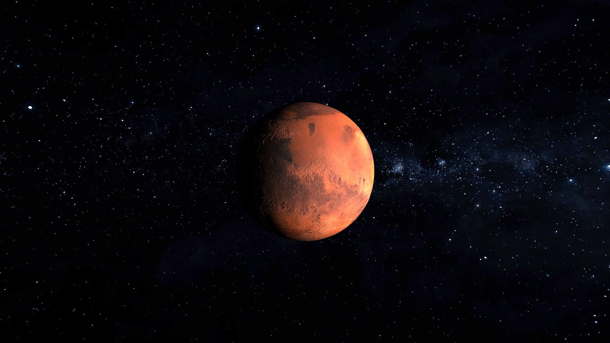
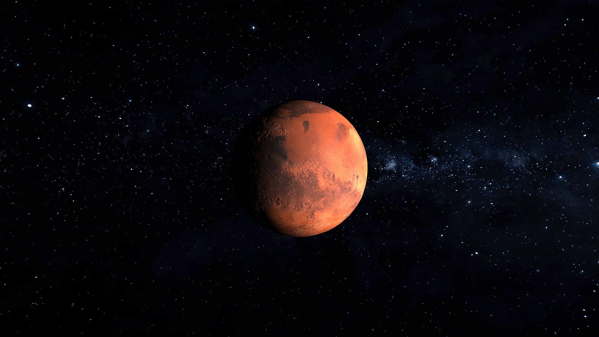

Synthèse d'Images Avancée
Poinsignon Nicolas
mon GitHub repositorymon profil LinkedIn
Aller à la section:
Titre
I: Introduction
II: Mécanismes de jeu
III: Contrôles
IV: Graphismes
V: Fonctionnalitées
VI: Conclusion
VII: Sources
Autres liens:
Retour à la page d'accueil
Accéder au jeu
Rapport de projet de Synthèse d'Images Avancée
Auteur: Poinsignon Nicolas
Date de publication: 4 Mai 2018
Date de dernière mise à jour: 5 Mai 2018
I: Introduction
Ce rapport a pour but de présenter le résultat du projet qui consiste en la réalisation d'une application de jeu, plus couramment connu sous le nom de jeu vidéo. Seront abordés, les mécanismes de jeu et leur implémentation dans un langage de programmation, la conception et mise en place de graphismes aboutis, ainsi que diverses fonctionnalitées pouvant être utilisées dans des jeux ou plus généralement dans tout type d'application 3D.
Le sujet de ce projet est la création d'un jeu fortement inspiré du célèbre jeu Space Invaders, comprenant les fonctionnalitées du jeu original ainsi qu'une sélection de fonctionnalitées supplémentaires.
Space Invaders est un jeu Japonais sorti en 1978 sur borne d'arcade. Qualifié de "shoot them up", le but du jeu est de piloter un vaisseau et de défendre la terre contre des aliens. Le joueur contrôle le vaisseau en bas de l'écran et les aliens, en haut de l'écran, avancent lentement vers le sol et font feux sur le joueur. Le joueur doit alors utiliser les armes de son vaisseau pour défendre la terre et venir à bout des aliens. Le jeu consiste en un certain nombre de vagues, chacune plus difficiles que les autres, et d'un système de points, permettant au joueur de comparer ses progrès.
Note sur les résolutions et formats supportés
Le jeu et son GUI ont été conçus (avec le mode plein écran activé) sur la base du format 4:3 et supporte les formats plus larges (16:9 et +), et supporte toute résolution. L'utilisation de format plus étroit que 4:3 peut rendre une partie du GUI en dehors de la vue caméra. Notez que ne pas jouer au jeu en mode plein écran augmente la largeur du format, à cause des barres de navigation.
Bibliothèques JavaScript utilisées
Pour le jeu:
- dat.gui - permet la création facilitée de GUI interactif, utile pour le développement
- OBJLoader - permet le chargement d'objet 3D .obj par le simple appel d'une fonction
- Stats - permet d'afficher les performances de l'application, notamment le nombre d'image par secondes
- OrbitControls - offre un control orbital de la caméra
- three.js - une librairie puissante servant de support entre le navigateur web et la librairie de rendu graphique OpenGL
- THREExFullScreen - permet le passage en plein écran d'une fenêtre de navigateur
pour le rapport :
- jquery - simplifie la gestion des événements asynchrones JavaScript
- twentytwenty (jquery.event.move et jquery.twentytwenty) - permet la création d'images comparatives, se dévoilant avec un slider (voir section Graphismes)
Architecture
Les fichiers et objets principaux suivent cette hiérarchie de dépendance:
- main() (main_MarsInvaders.js)
- animate() boucle d'animation et de rendu
- onWindowResize() redimensionne la fenêtre de rendu si modifiée
- objet battleManager (battleManager.js) gère le déroulement du jeu
- objet battleObjects (battleObjects.js) comprend les entitées du jeu
- objet hudManager (hudManager.js) gère l'affichage des informations pour le joueur
II: Mécanismes de jeu
III: Contrôles
| Fonctionnalité | Raccourci |
|---|---|
| Menu des options graphiques | H |
| Se déplacer (gauche/droite) | Touches fléchées |
| Faire feu | Barre espace |
| Mode Invincible | I |
| Tuer tous les ennemis | K |
| Perdre la partie | L |
| Plein écran | F |
| Screenshot | P |
IV: Graphismes
Les vaisseaux
Les vaisseaux du joueur et des ennemis sont des objets 3D modélisés sous Blender. Ils ont été exportés en .obj puis chargés dans le jeu en temps que THREE.Mesh grâce à la bibliothèque OBJLoader. Le matériau utilisé pour les vaisseaux est le matériau "Standard", qui offre un aspect métallisé grâce aux effets de réflexion spéculaire supporté par ce matériau. Afin de mieux discerner les vies et pouvoir profiter pleinement des détails du modèle 3D, les vaisseaux représentant les vies du joueur en haut à droite de l'écran utilisent eux un matériaux "Normal", dont la couleur de surface dépend de l'orientation des normales faces à la caméra. Ce matériau, par défaut, ne subit pas l'éclairage de la scène, toute surface du matériau est donc éclairée quel que soit son orientation, ce qui permet, combiné aux couleurs, d'attirer le regard du joueur.
L'arrière plan
L'arrière plan de la scène est composé de deux éléments: la skybox représentant la Voie Lactée, ainsi que la planète Mars.
La Skybox est une sphère dont les normales ont étés inversés
skybox.material.side = THREE.BackSide;
dont l'ordre de rendu sur le buffer de profondeur à été forcé au dernier plan
skybox.material.depthWrite = false;
et dont la texture (map de couleur) provient d'une image de synthèse de la Voie Lactée.
skybox.renderOrder = -999;
La planète Mars contient plusieurs aspects graphiques.
La map de couleur de Mars provient du site SolarSytemScope.
Les "displacement map" et "normal map" ont été créés au moment, à partir de la cartographie d'altitude de Mars, de logiciels de cartographie et de création de normal map, détaillé ci-dessous.
Conversion de la cartographie de Mars
La carte d'altitude suivante Mars_HRSC_MOLA_BlendDEM_Global_200mp_v2,
au format tiff (altitude encodée sur 16 bits),
fut convertie en deux images png (grayscale, niveau de gris sur 8 bits), grâce à OpenEV.
Chacune de ces deux images représentant des niveaux d'altitudes différents. (Filtre logarithmique pour émuler la profondeur de détail 16bit sur deux images de détail 8 bit.)
La fusion par transparence de ces deux images png donne une représentation assez proche du relief de la surface de Mars.
Sans être parfaite, je n'ai pas trouvé sur internet de map de cette qualitée.
(La conversion du fichier tiff causa plusieurs écrans bleus dus à des fuites de mémoire, le fichier faisant 11 gigabytes... Le format de fichier utilisé par la Nasa et le centre d'astrologie,
BiGTIFF, est une variante du format tiff supportant les fichiers de plus de 4 gigabytes)
Ensuite, avec l'aide de logiciels permettant la création de normal maps et displacement maps (CrazyBump et NormalMap Online),
la map d'altitude png fut convertie en normal map et displacement map, dont l'utilité sera détaillée par la suite.
{kind=link}
{kind=link}
{kind=link}
Le Normal Mapping
Le Normal Mapping permet de simuler le relief d'une surface, il agit comme un filtre d'ombre ajouté par dessus la texture (couleur originale) d'un objet. Le procédé consiste, dans la pipeline de rendu graphique,
pendant le calcul de l'éclairage de l'objet, d'appliquer un modificateur sur les normales des faces de l'objet. Ainsi, en changeant l'orientation face à l'éclairage, on peut simuler des bosses, des creux,
tout type de détail.
Contrairement au Bump Mapping, qui n'utilise que des fichier images en niveaux de gris pour stocker et générer le relief, le Normal Mapping lui utilise une image png couleur avec transparence (RGB channels et alpha channel) dont chaque
channel représente un vecteur en soit. Les couleurs rouge, vert et bleu représentent les trois axes d'un repère 3D et transcrivent l'orientation exacte que prendra la normales lors du calcul d'éclairage.
L'alpha channel quand à lui peut être utilisé pour représenter l'altitude, dans le cadre d'un Displacement Mapping.
Voici un comparatif de la surface de Mars, avec le Normal Mapping désactivé (Image 1) puis activé (Image 2):
Note sur la différence des couleurs entre Firefox et Chrome
Malgré l'éclairage réaliste apporté par le Normal Mapping, l'objet reste néanmoins plat. Il est possible de modifier, dans la pipeline de rendu graphique, la position des vertex par le biais d'une displacement map. La displacement map consiste en une image en niveaux de gris, dont chaque pixel représente l'altitude (sur 8 bit, donc 256 niveaux d'altitude différent). Une fois appliquée à un objet, chaque vertex de l'objet est déplacé vers le haut, suivant l'intensité décrite par la map.
Voici un comparatif de la surface de Mars, avec le Displacement Mapping désactivé (Image 1) puis activé (Image 2):

La Tessellation
Le Displacement Mapping déplace les vertex de l'objet. Hors, si cet objet ne possède pas une densité de vertex suffisante sur sa surface, le Displacement Mapping aura un effet très grossier et adoucis. Afin d'obtenir de bons résultat, il est préférable d'augmenter la densité de vertex dans le mesh de l'objet. Pour la planète Mars, j'ai opté pour l'utilisation du mesh IcosaHedron (signifiant figure aux faces égales). L' IcosaHedron est à la base composé de 20 faces, chacunes de ces faces étant un triangle isocèle. Three.js offre la possibilité de "Tessellate" l'IcosaHedron, ce qui a pour effet de diviser chacunes de ces faces isocèles en 4 triangles isocèles. Le nombre de vertex obtenus est alors 20*4^divisions.
Illustration d'un IcosaHedron:
Après un nombre suffisant de divisions, L'i=IcosaHedron ressemble à s'y méprendre à une sphère. En comparaison à une sphère classique, l'IcosaHedron offre une meilleure répartition de la densité de vertex. En effet, sur une sphère classique, on peut observer une densité plus élevée de vertex aux sommets et une densité plus faites à l'équateur, et on peut noter également que la sphère utilise des "quads", soit 4 vertex dans le même plan. L'IcosaHedron permet alors un plus grand niveau de détail pour un nombre égal de vertex.
Voici un comparatif de la surface de Mars, avec une faible Tessellation (5 divisions, Image 1) puis avec une forte Tessellation (8 divisions, Image 2):
Note sur la différence des couleurs entre Firefox et Chrome
Si l'on utilise la propriété de sur-exposition (altération du tone mapping, permettant de simuler une définition de couleur plus élevée), on remarque que le navigateur Firefox donne des résultats moins satisfaisants.
L'exposition du tone mapping est ajustée dans l'application par:
renderer.toneMappingExposure = 2; (1 par défaut)
Voici une comparaison entre l'affichage du même programme sur Firefox (Image 1) et Chrome (Image 2).
 

V: Fonctionnalitées
Fonction plein écran (fullscreen)
La touche f permet l'affichage plein écran de la fenêtre de jeu.
Pour se faire, la bibliothèque THREExFullScreen est utilisée.
Fonction capture écran (screenshot)
La touche p permet d'ouvrir une capture d'écran dans un nouvel onglet.
Suite à une mise à jour de Chrome, la méthode originale ( var x = window.open(imageURI); ) ne marche plus.
Afin de pouvoir ouvrir des URI sur un nouvel onglet, il faut utiliser les balises html iframes:
var iframe = "<iframe width='100%' height='100%' src='" + dataUrl + "'></iframe>";
var x = window.open();
x.document.write(iframe);
x.document.close();
Il faut également penser à autoriser les pop-up sur votre navigateur!
Cette solution fonctionne sur:
- Firefox (testé sur v59.0.2 (64-bit))
- Chrome (testé sur v65.0.3325.181 (64-bit))
VI: Conclusion
A l'instar du projet du semestre précédent sur la Synthèse d'images, travailler sur ce projet m'as permis d'apprendre énormément sur le déroulement en arrière plan des programmes de rendu graphiques,
et renforce donc ma motivation à orienter mes études dans ce domaine.
A cause d'une mauvaise gestion du temps de travail de ma part, mais également d'une fin de semestre très chargée, je me suis trouvé dans l'incapacité de produire l'application dans l'état que je désirais.
Mais je reste satisfait de ce travail, et suis dorénavant encore plus motivé à le faire évoluer et à poursuivre dans ce domaine.
VII: Sources
Bibliothèques JavaScript
- jquery-3.3.1.min.js github.com/jquery/jquery
- jquery.event.move.js, jquery.twentytwenty.js zurb.com/playground/twentytwenty
- three.min.js threejs.org/build/three.min.js
- OrbitControls.min.js github.com/mrdoob/three.js/blob/dev/examples/js/controls/OrbitControls.js
- dat.gui.min.js github.com/dataarts/dat.gui
- Stats.min.js github.com/mrdoob/stats.js
- THREEx.FullScreen.min.js learningthreejs.com/data/THREEx/THREEx.FullScreen.js
- OBJLoader.min.js github.com/mrdoob/three.js/tree/dev/examples/js/loaders
Imagerie, Textures et Cartographies
- Map de couleurs de Mars et de la Voie Lactée solarsystemscope.com/textures/
- Map d'altitude de Mars, générée par le MOLA (Mars Orbiter Laser Altimeter) de la navette "Mars Global Surveyor" (MGS) astrogeology.usgs.gov/search/map/Mars/Topography/HRSC_MOLA_Blend/Mars_HRSC_MOLA_BlendDEM_Global_200mp_v2
- OpenEV, visualiseur de données géospatiales openev.sourceforge.net/
- CrazyBump, éditeur de map d'altitude et de normal maps crazybump.com/
- NormalMap Online, éditeur de map d'altitude et de normal maps cpetry.github.io/NormalMap-Online/